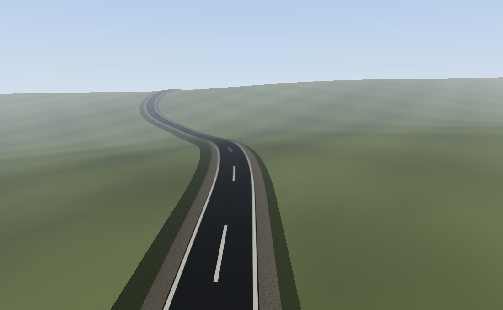

A road is a 3D polyline plus a profile: the shape of a cut across it, from the crown of the carriageway out through the shoulder to the verge that meets the ground. Sweep the one along the other and you have a surface a car can drive on.
OpenGLContext.scenegraph.road is the runtime half — geometry and
material, no decisions. Where a road goes, whether a valley wants a
bridge or a causeway, and how the ground is reshaped to meet the shoulder are
authoring questions, and they live in OpenGLContext-editor.
A game generating a road at runtime, or an editor drawing one under the cursor,
needs only what is here.
from OpenGLContext.scenegraph.road import road_mesh, RoadProfile
mesh = road_mesh(
[(0, 12, 0), (60, 14, 20), (140, 13, 10), (220, 9, -40)],
RoadProfile(lanes=2),
spacing=5.0,
)
The result is a PBRMesh with positions,
normals, tangents and texture coordinates, and a road material on it. Put it in
a Shape and it draws; hand it to the baker and it becomes tile
content.
spacing is in metres, and it is the whole of a road's
level of detail: the centreline is re-sampled to that interval before
the sweep, one vertex ring per point, so the same route at
spacing=40 is the road a distant tile carries. Left out, the points
you give are the points swept.

python tests/roads_demo.py
— 452 m of two-lane road, swept from an alignment of straights and
radii laid over a height function. The three parts of the section read out
from the centre line: the carriageway with its dashes and edge lines, a
gravel shoulder each side, and a grass verge falling away to the ground.
Press d to re-sample the centreline at 30 m instead of
4 m and print the counts again, w to wet the tarmac.What an application writes is the sweep and the node it goes in:
from OpenGLContext.scenegraph.basenodes import Appearance, Shape
from OpenGLContext.scenegraph.road import RoadProfile, road_mesh
centreline = [(0, 1.3, 55), (0, 1.3, 10), (-9, 1.5, -55), (-41, 6.1, -150),
(-56, 12.7, -250), (-33, 9.4, -345), (-8, 5.2, -405)]
mesh = road_mesh(centreline, RoadProfile(), spacing=4.0)
road = Shape(geometry=mesh, appearance=Appearance(material=mesh.material))
print(len(mesh.positions), 'vertices,', len(mesh.indices) // 3, 'triangles')
# 840 vertices, 1428 triangles
The demo reports the road it built the same way, so what the spacing costs is in the text as well as in the picture:
452.3 m of road at 4 m spacing: 115 points, 805 vertices, 1368 triangles 451.9 m of road at 30 m spacing: 17 points, 119 vertices, 192 triangles
Nothing about the route changed between those two lines — only the interval the centreline was re-sampled to before the sweep.
RoadProfile is measured out from the crown, in metres:
| Field | Default | Is |
|---|---|---|
lane_width | 3.7 | one lane across |
lanes | 2 | how many of them |
shoulder_width | 1.5 | the sealed strip outside the carriageway |
shoulder_drop | 0.10 | how far it sits below the carriageway edge |
verge_width | 3.0 | the grassed batter out to the ground |
verge_drop | 1.2 | how far the verge falls over that width |
crossfall | 0.02 | the camber that drains the carriageway, as a fraction |
texture_length | 25.0 | metres of road one texture repeat covers |
carriageway_width and total_width report what those
add up to. texture_length is what sets the length of the centre-line
dashes, since the dashes are in the texture.
section_offset(across) answers how far below the crown the
surface is at a distance out, one value or a whole array of them, held at the
verge's value past the road's own edge. It is what puts anything placed by how
far along the road it is and how far across — a vehicle, a marker, a sign's foot
— at the height the road actually is there, without asking the physics what is
underneath it and being told about whatever else is standing in the way.
section_offset(across, bank) takes the corner's lean as well
(below): a banked cut has less camber left in it, and
past the lean it has none.
A line drawn across a landscape without regard for it climbs and drops wherever the landscape does. Held afterwards to a grade a car can drive, the alignment then departs from the ground by whatever the difference was — and over real relief that is a viaduct or a bore for most of its length. On the shipped landscape an ellipse comes out 72% carried, and no grade limit changes that, because no drivable grade follows five hundred metres of relief in four kilometres.
The answer is to move the line. ease_route slides each point
along its own contour, towards the height its neighbours are at, which finds the
route through the same country that the ground supports: round the shoulder of a
hill instead of over it. It keeps the shape a designer drew — no point moves
further than reach from where it was put — and an open route keeps
its ends exactly.
from OpenGLContext_editor.world.route import cornering_radius, ease_route
plan = ease_route(drawn, natural_ground, closed=True, spacing=6.0,
minimum_radius=cornering_radius(42.0))Sliding a line onto easier ground puts corners into it, and a corner
tighter than the grip available at the speed the road is for is a corner a car
leaves. minimum_radius holds them: it is applied between rounds
rather than at the end, because a corner opened out once is a corner the next
round can close again, and the two are projections onto sets that both contain
the drawn line. spacing matters as much: a plan of points tens of
metres apart is a polygon, and the road along it turns through the whole of each
corner at one vertex however gentle the polygon looks from a distance.
A summit exactly on the line has no downhill side — the ground across the route is level there — so a route eased from a place like that stays where it is. That is a limit of sliding rather than searching, and it is the honest behaviour: the alternative is picking a side at random.
A polyline drawn over a landscape is not yet a road. Two limits make it one, and the second is the one that is easy to forget:
v over a
vertical curve of radius R lifts v²/(gR) of the
car's weight off its wheels, so the design speed fixes the shortest curve the
alignment may use.Both are applied by OpenGLContext_editor's
follow_terrain, which is where an alignment is settled; see the
editor's README.
The runtime here takes the finished centreline.
An alignment that is not on the ground is on an earthwork. Fill runs down from the shoulder to where it meets the land; a cutting runs up to it. How far out that is depends on how far the road is from the ground and on nothing else — a road already on the land disturbs almost nothing, and one carried forty metres over a valley builds an embankment as wide as it needs. A batter of about one in one and two-thirds is near the steepest earth stands at unheld.
The ground under the carriageway is set a hand's breadth below the road, because a road is built on a formation and surfaced on top of it — and because two surfaces at exactly the same height fight over which one is drawn, which shows as the ground flickering through the tarmac.
Past a point the ground cannot absorb the road. An embankment fourteen metres tall already needs fill growing as the square of its height, and a cutting eighteen metres deep has to put its spoil somewhere and hold its faces; past those the road is carried instead — a deck on piers over the low ground, a bore through the high ground. Under a deck the land is left exactly as it was found: filling a valley in would put the structure inside a hill of its own making. Through a bore the opposite holds and the cutting runs the length of the tunnel, because a ground mesh draws straight lines between its samples: a cut that stops at the portal leaves the line from the last cut sample up to the untouched hill standing across the opening, and the road arrives at a bank with the arch in the air behind it. The cost is that the hill over a long bore opens into a broad cutting; what would keep it whole is a hole in the ground mesh with the bore's own outside plugging it.
A portal opens where the bore fits inside the hill, which is measured to the crown and not to the carriageway: a bore's arch stands seven or eight metres over the road, so a portal placed where there are two metres of soil over the tarmac is one whose mouth is buried. The stretch between there and the surface is an ordinary cutting.
Which is which is chosen from the finished alignment against the undisturbed
land, by
OpenGLContext_editor.world.structures.choose_structures. It returns
a partition of the road into Op.DIRT, Op.CAUSEWAY,
Op.BRIDGE and Op.TUNNEL — every point in exactly one
stretch, so the sequence of operations is the whole story of how the road is
built:
from OpenGLContext_editor.world.structures import choose_structures
for run in choose_structures(alignment, natural_ground, closed=True):
print(run.kind, run.length(alignment))
A departure has to last as well as be large: sixty metres for a
tunnel, forty for a span, or it is dug out or filled instead. Each structure then
reaches out down its approaches — up to a hundred and twenty metres — until the
road is within an abutment's height of the ground, or the cover over it has
fallen to PORTAL_COVER, so a deck lands on something and a bore
opens at a portal rather than either stopping in the air. A designer
overrides any stretch with an overrides triple.
A causeway is the middle case: a few metres over low ground — a lake margin, a shallow draw — where a deck is more structure than the crossing needs and an embankment battered out to the angle earth stands at is a hillside the width of a field. It is fill retained at the width of the road it carries, with a low wall at each edge, and the ground either side is left where it was found. The alignment is held above the waterline with freeboard and its approaches climb to meet it.
OpenGLContext.scenegraph.roadworks sweeps them along the same
centreline and with the same frame the carriageway uses, so they stay in register
with it through a bend and a climb:
from OpenGLContext.scenegraph.roadworks import (
bridge_meshes, causeway_meshes, tunnel_meshes)
deck = bridge_meshes(run, profile, ground) # deck, parapet, piers
fill = causeway_meshes(run, profile, ground) # body, wall
bore = tunnel_meshes(run, profile) # bore, portals
Each returns its parts as {name: mesh} rather than one merged
mesh, so a caller can light, cull or write them separately.
BridgeProfile sets the structural depth of the deck, the barrier
standing on its edges (parapet, a BarrierProfile), and
how far apart the piers are. A pier is dropped to
whatever the ground is doing beneath it; the two ends are abutments, wider,
because that is where the deck is carried onto the land — and nothing at
all is built where the ground has come up past the soffit, because a
deck running into a hillside is carried by the hill and the alternative is a
block of concrete standing across the carriageway.
BarrierProfile is what stands on the edge of a
structure to keep a car on it, and it has to be tall enough to hold one
and low enough to see past. Those pull opposite ways, and what settles it is
that they apply to different parts of it: a solid kerb (0.35 m)
is what a wheel meets, and an open railing above it — rails bars on
posts at post_spacing — takes the barrier to its full
height (1.1 m) while being almost entirely holes.
What a driver can see down past is the kerb, because the
railing is looked through, and that is the whole reason for the shape. A deck
forty metres over a valley is built there because of what is under it.
sightline(eye, offset) is that as a number — how steeply a driver
whose eye is eye above the carriageway can look down past a barrier
standing offset to the side:
BarrierProfile().sightline(1.31, 3.6) # 14.9 degrees BarrierProfile(height=0.95, kerb=0.95).sightline(1.31, 3.6) # 5.7 degrees
From a deck forty metres up those are the nearest ground visible at 150 m
and at 402 m: with a wall, the valley floor is never seen at all. A
kerb at or above height is a wall and no
railing is built, which is what a causeway a metre over a marsh wants, since
there is nothing under it to see.
CausewayProfile sets the wall standing on each edge and how far
the fill leans out per metre of its depth. The wall is deliberately
low — below a seated driver's eye: a causeway is built to cross
something worth seeing, and one walled to windscreen height turns the crossing
into a corridor. The batter is near-vertical, because a causeway is a retained
structure rather than a heap of earth. The body is built down to whatever the
land is doing beneath each point, with a lip where the road meets it so the wall
always has something under it.
TunnelProfile sets the crown's clearance over the carriageway,
how far below it the arch's feet sit, and how far the portal's face stands out
around the arch. A bore is a closed tube: the ground it runs
through has to be cut away for the road to pass, so the lining is all there is
under the road, and one open underneath leaves a trench beside the carriageway
for a wheel to drop into. It also carries its own shade on its
vertices — full daylight at the portals, falling to a tenth of it fifty metres
in — so a driver goes into the dark and comes out the far end with no light
source involved, and a bore shorter than twice that never goes fully dark.
A bore is lit, and lit twice. lamp_spacing hangs
luminaires along the crown, and the pool each throws is baked onto the
lining (bore_shade) — so the whole length of a tunnel is
lit at any distance and at whatever a renderer can afford, which for a bore with
a lamp every twenty-five metres is the only way it can be. What a baked pool
cannot do is light anything in the tunnel: a car under a lamp has no
idea it is under one. So tunnel_lamps(points, profile) says where
the fittings are, and a game spends its few real lights on the ones the driver is
among. lamp_glow is how far the baked pool lifts the lining out of
the gloom and lamp_reach how far it spreads; lamp_spacing
of zero is an unlit bore.
What is baked onto the lining is light, not tint. The
lining's material sets bakedLight
(OGLC_materials_baked_light in a glTF file), which tells the
renderer that this mesh's COLOR_0 is light worked out when the
world was built: the three colour channels are added as emission
instead of multiplying the surface, so the lamps are on the wall whatever the
scene is doing and a headlight still paints its own circle across them. Read as
a tint the concrete comes out dark and the scene then lights that concrete
again, so the few fittings that became real lights are counted twice — and
because only the nearest few are lit, the whole bore brightens and dims as they
are handed on.
The fourth channel of the same vertex colour is how much of the
outdoors still reaches that point (bore_sky): one at either
portal, nothing daylight metres in. A renderer in this mode reads it
as occlusion of the environment rather than as transparency, so the lining stays
solid and the sky stops lighting the middle of a tunnel as evenly as it lights
the hillside over it. Without it there is no amount of dimming the lamps that
makes an interior read as an interior.
Structure is concrete_material(), and a causeway's wall is the
same stuff as the fill it stands on. A deck's railing is
barrier_material(), which is darker: it is the thing closest to the
camera for the whole length of a span, and in structural concrete under a strong
sun it comes out white — the most conspicuous object in the scene. That
darkness is wrong on a solid wall, where the outer face has nothing but sky to
light it whichever way the sun is.
Every one of these surfaces is seen from outside it, and is wound so its faces point that way — a section written in whichever order reads best, and mirrored to build the other side of the road, still comes out facing the way it is meant to. Wound the other way a face is given a normal pointing into the solid and a renderer lights it from behind, so it draws unlit whatever the sun is doing; on a causeway that is the flank of the crossing, a black band lying along the horizon for as long as the crossing lasts. The one surface that faces the other way is the lining of a bore, which is only ever seen from the carriageway running through it.
Over a structure the carriageway takes the road's on-structure cut: the verge neither falls nor stays. There is no ground beside a deck for it to fall to, and a strip of grass inside a bore is grass inside a bore, so what is left is an edge beam — the kerb a parapet stands on, or the walkway beside a carriageway in a tunnel. The road narrows onto the structure over a taper rather than stepping onto it, and the structures are built to the narrowed section rather than to the road's grass.
The sweep takes a section per point for it, which is what
morphed_sections(profile, other, blend) builds and
road_surface(points, profile, sections=…) accepts; the same
mechanism widens a road for a lay-by.
A road that is the same width everywhere is a road where getting by whatever
is in front happens when the driver in front allows it.
widened_sections(sections, widening, profile) gives a stretch of it
more carriageway — ``widening`` metres, evenly about the crown, with the
shoulder and verge going out with it rather than being eaten by it — and
RoadProfile.widened(extra) is the same road said as a profile.
from OpenGLContext.scenegraph.road import banked_sections, widened_sections
cut = widened_sections(sections, widening, profile) # first the extra tarmac
cut = banked_sections(cut, bank, profile) # then the camber it leavesIt composes, because a cut is linear in how wide its carriageway is. Widening one already blended for a structure gives exactly the cut that structure would have had if the road had been that wide all along, so a deck with a passing place on it needs no special case. Apply it before banking, which reads the carriageway edge off the cut it is handed and so takes the camber out to wherever the road actually reaches.
The collider takes it too —
RoadColliders(…, widening=…) — and a baked world
writes it beside the centreline as widening. Swept at the road's
nominal width instead, the collider is a wall down each edge of the extra
tarmac.
What it is not is a marked third lane. The carriageway is wider and its markings widen with it; a road that gains a lane line, and an asymmetric climbing lane added on the uphill side only, are not generated.
Each centreline point gets a frame: the tangent along the line, the right vector across it, and the up vector their cross product gives. The profile is placed in that frame, so the carriageway tilts with a climb and holds its width through a bend. Up is world up unless the road is given a lean to roll the frame by, which is what banking a corner is.
A deck and a causeway are drawn with a barrier along each
edge — a solid kerb with a railing standing on it, shaped so a driver can
still see down past it, since a bridge forty metres over a valley is there
because of what is under it. BarrierProfile is that shape.
It has to be collided with, not just drawn. A barrier that is
only geometry keeps nothing on anything: the car goes through the railing and
off the deck into whatever the bridge was built over.
barrier_wall(points, profile, barrier, bank) is the shape a
collider takes — the barrier's own footprint carried to its full height,
solid, because the holes in a railing are for seeing through rather than driving
through. RoadColliders puts one up
along every stretch it is told is carried.
A corner can be superelevated — the whole carriageway rolled about the centreline so that it leans into the turn. Part of the car's weight then does the work of holding it on the line, so the corner is faster, or as fast round a tighter radius. That is what lets a road hold its design speed through country a flat road of the same speed would have to sweep across in long arcs.
from OpenGLContext.scenegraph.road import bank_profile, banked_sections, road_mesh
bank = bank_profile(line, speed=200 / 3.6, profile=profile, closed=True)
mesh = road_mesh(line, profile, bank=bank,
sections=banked_sections(sections, bank, profile))
bank_profile(line, speed, profile, maximum, gradient, closed)
returns the lean at each centreline point, as a fraction — how far the
surface rises across the road over the distance it rises across — signed
so that positive is a right-hand bend, whose right-hand side is
the low one. Each corner gets the lean that balances a car at
speed: at that speed the road alone holds the car on the line and
the tyre's grip is untouched, so the speed is a floor and what
the corner actually holds is more.
| Argument | Default | Is |
|---|---|---|
speed | — | the speed corners are banked to hold, in m/s |
maximum | 0.10 (MAXIMUM_BANK) | as far as a road may lean, whatever the corner asks |
gradient | 0.005 (BANK_GRADIENT) | how much faster the carriageway's edge climbs than its centreline through a transition |
baseline | 30.0 m | over how much road the curvature is measured |
Ten per cent is the ceiling because a road is not an oval. Highway practice runs from about four per cent where ice is expected — a vehicle stopped on a steeper one slides sideways down it — to about twelve where it is not. At ten, a corner is some ten per cent faster than the same corner flat, or a fifth tighter for the same speed. Nothing stops a caller asking for more; what the default is, is what a road is built to.
The lean is taken up before the corner, not in it. A road
cannot roll from camber to full bank at a vertex, so the change is held to
gradient, which over the half-width the road rotates about is a
limit on how much the lean may change per metre — some seventy metres of
transition for a full bank on a two-lane road. The runoff straddles the corner's
entry, so a car arrives already leaning; a corner too near another to have its
runoff is banked as far as the road between them allows, and a road that is not
a circuit starts and ends flat.
The camber is used up by the lean. A crowned carriageway
drains both ways and a banked one drains one way, so as the lean grows the outer
half rotates up about the crown until the whole carriageway is a single plane.
banked_sections(sections, bank, profile) is that, applied to a cut
already worked out; RoadProfile.banked(bank) is the same thing said
as a profile.
plan_curvature(line, baseline, closed) is underneath it: how
tightly the line turns at each point, in 1/metres, signed the same way. It
measures over a real length of road rather than between neighbouring samples,
because a line written down every few metres carries an arc as chords and three
neighbours of one read as a corner far tighter than the one they are on.
Everything swept along the road takes the lean. A bridge
deck, a tunnel bore, a causeway's fill and the collider under the wheels all
accept a bank, because a superelevated corner rolls what is on it
about the centreline together.
tarmac_material(wetness, seed) builds the PBR material, and
road_texture(size, seed) the image behind it: asphalt, the gravel
shoulder, the grass verge and the lane markings, laid out across the same
section the profile sweeps.
Wetness runs 0 to 1 and does two things at once, because that is what water does: it darkens the albedo (to 45% at fully wet) and drops the roughness from 0.72 to 0.12. A wet road is near-mirror, so the reflection comes from the environment — image-based lighting — with no reflection pass involved. A game can move it with the weather.
from OpenGLContext.scenegraph.road import road_mesh, tarmac_material
mesh = road_mesh(route, spacing=5.0,
material=tarmac_material(wetness=0.8, seed=3))
seed varies the surface noise, so two roads in one scene do not
share a pattern. Pass an image to use artwork of your own instead
of the generated one.
A generated road already knows what it is about to do: the alignment carries
its own curvature and its own grade, and its structures are written down. So
which sign belongs where is derivable rather than authored, which is
most of the point of generating a road instead of drawing one.
OpenGLContext_editor.world.signs.warn_of reads a road and returns
the warnings it wants; OpenGLContext.scenegraph.roadsigns is the
object they are drawn as.
from OpenGLContext.scenegraph.roadsigns import SignFace, sign_meshes, sign_texture
parts = sign_meshes(SignFace('bend-left', 60)) # post and plates, facing -Z
plate = sign_texture('dip') # a face, painted not shipped
A sign is one prototype placed many times, so sign_meshes builds
it at the origin facing -Z and a placement turns it to meet the traffic. A
SignFace is what a sign is: the kind, and the speed in
km/h that goes with it.
The signs are Ontario's. A warning is a black symbol on a yellow diamond; how fast the hazard is worth goes on a rectangular tab below it; and a speed limit is a white rectangle reading MAXIMUM over the number over km/h. The shape carries as much of the meaning as the symbol does — a driver reads a diamond as "take care" and a white rectangle as "this is the law" before they have read anything on it — so a plate's geometry is cut to its own outline rather than being a quad with the corners painted out, and the picture is drawn at the plate's own aspect inside its atlas cell so nothing is stretched. The faces are painted, so a world needs no sign artwork of its own.
How fast a bend is worth comes off the bend.
corner_speed(radius) is what the tyres will hold —
sqrt(grip * g * r) — and advisory_speed(radius) is
what the tab says: 60% of it, rounded down to 10 km/h, because a sign carrying
the limit is a sign that is wrong for a wet road, a laden car or a cold tyre.
cornering_radius(speed) is the same rule read the other way, which
is what a road being laid out to a design speed uses, so a road is signed by the
rule it was built by. All three take a bank
(above), because how far a bend leans is part of how fast
it is: a plate warning a driver off a corner the road is holding them through is
a plate they learn to ignore. All three are in
OpenGLContext.scenegraph.road.
How much road a driver can see is geometry too.
sight_distances(line, clear, reach, closed) answers, for every
point of a centreline, how far along it can be seen. A line of sight is the
chord between the driver and what they are looking at, and what blocks
it is whatever stands inside the bend between the two: clear is how
far to the side of the road the view is unobstructed, so a bend of radius
r is seen about sqrt(8 * r * clear) round it, and a
straight to the end of reach (600 m by default,
SIGHT_REACH). All in metres.
clear is one figure for the road or one for each point
of it, because a road does not run through the same thing for its whole
length: a viaduct has a see-through railing and a drop beyond it that holds
nothing, so it is seen along however it curves, while inside a bore the wall is
at the road's edge and what is not in the tube is not seen at all. Ground
geometry only — a crest that hides the road beyond it is a different
question and this does not answer it.
What reads it is anything deciding whether there is room for a manoeuvre on road nobody has looked at yet: an empty look-ahead on a bend is a road nobody can see the end of, not a road with nothing on it. On a two-lane road it decides whether an overtake is on at all — getting by an 80 km/h car at racing speed wants a couple of hundred metres of it, and a road cut through a wood with the trees at the verge offers half that.
The posted limit is told to the road, not read off it, since
it is a decision rather than a measurement:
ProceduralWorld.posted (100 km/h by default, 0 for an unposted
road) is repeated along the circuit every 1500 m, skipping anywhere a warning
already stands — two plates a driver reads as one sign is a driver who has read
neither.
A warning stands a stopping distance before what it is about: far enough to act on, near enough to be about this hazard and not the next. What counts as a hazard is measured against the design speed, because there is always some speed at which any corner is too tight. Two hazards close enough together are one sign -- a left and a right become a double bend, which is what that sign means, anything else keeps whichever matters more, and the sign keeps the lower of the two speeds.
A sign stands inside the corridor the road was cleared through, which the
world knows and the sign does not: SignProfile.offset is how far
outside the road's own edge the post goes, and a world with trees up to the verge
sets it to less than that clearance.
A lap has to be visible from the driving seat. Timing already knows where the line is — it is where the centreline begins — but a driver cannot see a number, so a circuit marks it: a chequered banner on a beam spanning the carriageway, with a chequered line across the tarmac beneath it. Coming the other way it reads the same, because the banner is a board with two faces.
from OpenGLContext.scenegraph.gantry import GantryProfile, gantry_mesh, start_line_mesh frame = gantry_mesh(span=12.0, drops=(0.2, 2.6)) # at the origin, road along Z paint = start_line_mesh(width=7.4, crossfall=0.02) # under it, on the road's camber
span is the distance between the leg centres and
drops how far below the road surface each leg's own ground lies,
left leg first — the two sides of a road are rarely level with it, and a leg
that stops at the tarmac's height hangs in the air on the low side.
GantryProfile holds the rest in metres:
clearance (5.4) from the road surface to the underside of the beam,
beam_depth and beam_width, banner_height
and banner_depth, leg_radius, and
margin (0.9) for how far outside the running surface the legs
stand.
The painted line follows the road's camber rather than lying
flat on it: a flat strip across a cambered road stands proud at the crown and
sinks into the tarmac at both edges. line_width is how far it
reaches along the road and line_lift (0.04) how far above the
surface it is drawn — paint in the surface z-fights with it, and paint well
above it is a plank. Its squares are sized off the row depth so that they come
out square, and there is an even number of them, so the crown falls on a joint
and the two halves of the line mirror each other.
The line's chequer is geometry; the banner's is a picture. From a driving seat the line is nearly edge-on, and a texture stretched nine times wider than it is deep loses its pattern to the mip level that grazing angle asks for — it reads as a plain white bar from the one place anybody looks at it. So each square on the road is its own quad reading a flat colour, and it stays a chequer at any angle and any distance. The banner is seen face-on and carries its chequer in the image, which is cheaper.
The whole marker is one draw. Steel, banner and the two road
paints are four corners of one image (gantry_atlas), so the frame
and its line wear a single material and a tile writes them as a single mesh.
That machinery is OpenGLContext.scenegraph.atlasmesh, and the
warning signs are built on it too.
The legs are solid. gantry_legs reports where each stands and how
much room it takes, which is what a physics world needs to put a body there
without being handed the geometry; the baker writes them into the world's
props, so a car hits a gantry leg whatever the streamer is
doing. Where the gantry belongs is
OpenGLContext_editor.world.gantry.start_finish, which reads it off
the road: the crown at the line, the span from the carriageway and its
shoulders, and a drop per leg from the ground each stands on.
A boulder on the verge, a car that broke down, a fence: what they have in
common is that they are placed — a mesh and a body at one spot, neither
of which moves — and that is what
OpenGLContext.scenegraph.props.Prop is. What kind of thing it is,
where it stands, which way it faces, and how much room it takes up, so a viewer
can draw it and a physics world can collide with it without either looking at
the other's copy.
from OpenGLContext.scenegraph.props import Prop, rock_mesh from OpenGLContext.physics.props import PropColliders boulder = Prop.of(rock_mesh(radius=1.4, seed=3), kind='rock', position=here) obstacles = PropColliders(physics_world, world.props) obstacles.update(car_position) # once a frame
The body does not come out of the tiles. Tile geometry is
level-of-detail geometry that arrives and leaves as the camera moves, and a
collider built from it would be a rock the car drives through at the moment the
tile behind it swaps. So the props travel in the tileset's extras,
the same way the road does, and the game stands them up itself — the ones within
reach, because a world's boulders are hundreds of bodies and the broadphase pays
for every one it holds.
What each one looks like is art, and the toolkit ships none. The exception is
the kind a landscape supplies for free: rock_mesh grows a boulder
out of a subdivided icosahedron, pushed in and out by a smooth function of
direction and settled into the ground, so a world can be strewn with stone
without an asset pipeline. It comes weathered — the mesh carries vertex colours
that mottle the stone facet to facet and grow moss over what faces up and takes
the rain, so a verge of boulders is not a row of one flat grey. The colours
multiply whatever the material carries as its base colour, so a caller handing
rock_mesh its own stone gets that stone weathered rather than
overruled.
from OpenGLContext.scenegraph.props import RockProfile, rock_mesh bare = rock_mesh(radius=1.4, seed=3, profile=RockProfile(moss=0.0)) deep = rock_mesh(radius=1.4, seed=3, profile=RockProfile(moss=1.0, mottle=0.5))
RockProfile holds both the shape and the weathering.
roughness is how far a vertex may move from the sphere it started
as, as a fraction of the radius (0.32); facets how many times the
icosahedron is subdivided (2); settled how much of the bottom is
pressed into the ground (0.34). mottle is how far the stone's own
colour varies over one boulder, as a fraction of it (0.34), and
moss how thickly moss has taken hold where it grows, from bare
stone at 0 to full cover at 1 (0.7) — where that is comes off the rock's own
shape, so a low figure is a wash of green over the same patches rather than a
different pattern. The stone is dark: a boulder quoted at the reflectance of a
paving slab is the brightest thing in a landscape and reads as a polystyrene
prop.
A forest road drawn at full sun with everything beside it in deep shade reads
as a lit strip laid over a photograph of a wood. shade is how much
of the sun reaches each point of the centreline, in [0, 1], written into the
surface's vertex colours:
mesh = road_mesh(route, profile, spacing=5.0,
shade=lambda points: terrain.shade(points[:, 0], points[:, 2]))
It may be an array as long as the points that are actually written, or a
callable taking them — which is what a caller re-sampling with
spacing needs, since it does not know in advance how many points
there will be. The whole cut at one point takes one figure: a road is one place
as far as a canopy is concerned. Baked rather than lit per frame, because the
trees do not move and neither does the sun; see
how dark it is under the trees.
road_surface(points, profile) returns
(positions, normals, texcoords, indices) without wrapping them in a
node — for a caller writing its own geometry, computing a collider, or feeding a
tile writer. resample_polyline(points, spacing) is the resampler on
its own.
A road baked into a tileset (see Baking a world) arrives as ordinary glTF content: the game streams a road without knowing it is one. What a game usually does need is the centreline — to place a car on the grid, time a lap, or drive an opponent — and geometry does not carry it.
So the editor's road layer writes the centrelines into the tileset's
extras, under a roads key — a list of routes, each
with its name, its centreline points, its
carriagewayWidth and totalWidth, its
length, whether it is closed into a circuit, and its
bank — one lean per centreline point, empty for a road whose
corners are flat — and its
structures, each a kind and the distances
from and to along the centreline, so a game knows the
car is on a bridge without asking the geometry:
import json
tileset = json.load(open('/tmp/world/tileset.json'))
for road in tileset['extras']['roads']:
print(road['name'], road['length'], len(road['centreline']))
The centreline is written as a shape rather than at full density; a game re-samples it for whatever it is doing.
What a fast vehicle drives on is not the tile. Tile geometry is level-of-detail geometry: two resolutions of one curve are the better part of a metre apart, and the surface steps under the wheels every time the streamer refines. A game builds the carriageway's collider from the centreline and the cross-section instead — which is why the section is in the ``extras`` — and gets one surface at one resolution everywhere. See colliding with a world that streams. A walker, which is slow and forgiving, can go on using the tiles.
road_surface.